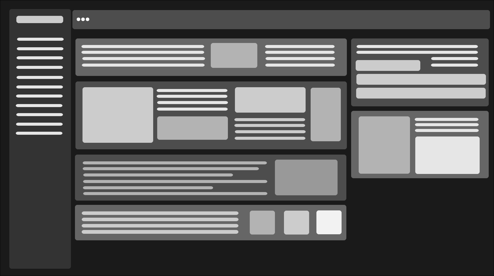
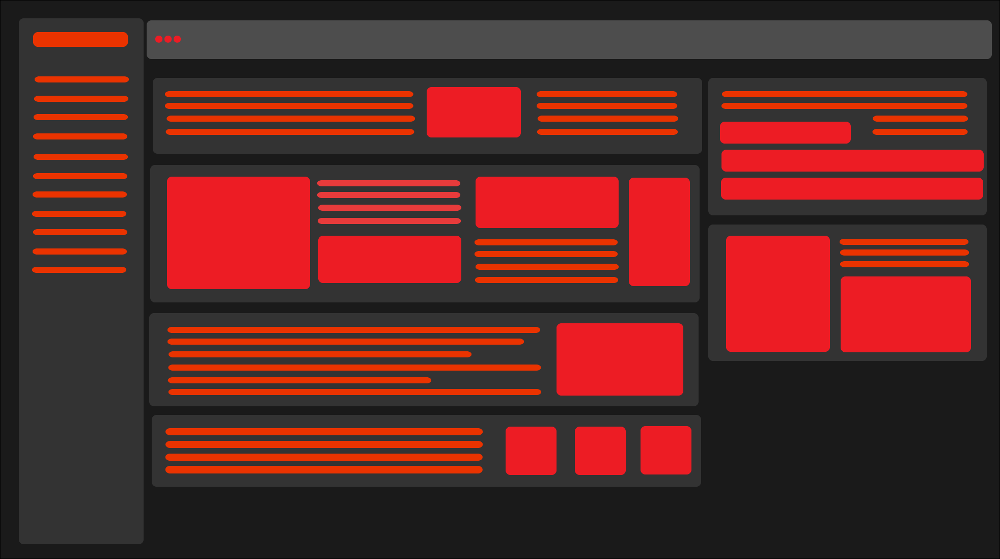
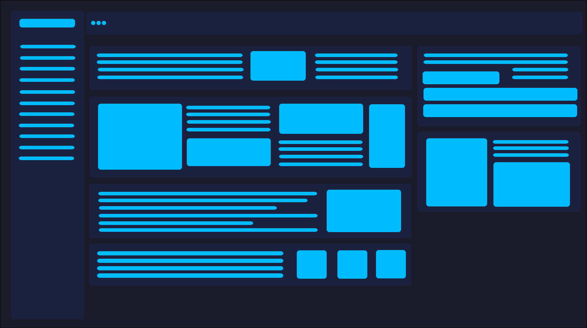
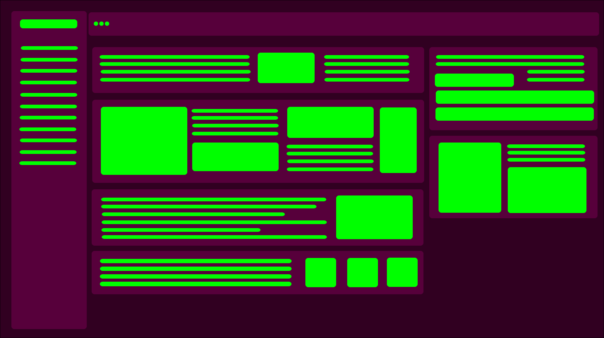

Erscheinungsbild:

Normal

Darkmode

Sith Lord

Deep Ocean

Pink Forest
Hinweis: Manche Designs schränken die Lesbarkeit von iServ ein
Erscheinungsbild:
Hinweis: Manche Designs schränken die Lesbarkeit von iServ ein
Inoffizieller iServ-Client für Windows